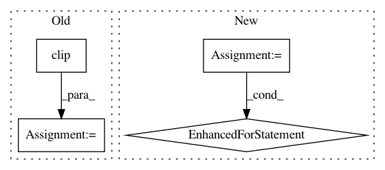

cd87ed5451587900017daa71d8c82daf786258fd,art/attacks/adversarial_patch.py,AdversarialPatch,generate,#AdversarialPatch#Any#,69
Before Change
if i_step == 0 or (i_step + 1) % 100 == 0:
print("Training Step: " + str(i_step + 1))
self.patch[:, :, 2] = np.clip(self.patch[:, :, 2], a_min=-123.680, a_max=255.0 - 123.680)
self.patch[:, :, 1] = np.clip(self.patch[:, :, 1], a_min=-116.779, a_max=255.0 - 116.779)
self.patch[:, :, 0] = np.clip(self.patch[:, :, 0], a_min=-103.939, a_max=255.0 - 103.939)
patched_images, patch_mask_transformed, transforms = self._augment_images_with_random_patch(x, self.patch)
After Change
print("Training Step: " + str(i_step + 1))
if self.clip_patch is not None:
for i_channel, (a_min, a_max) in enumerate(self.clip_patch):
self.patch[:, :, i_channel] = np.clip(self.patch[:, :, i_channel], a_min=a_min, a_max=a_max)
patched_images, patch_mask_transformed, transforms = self._augment_images_with_random_patch(x, self.patch)
gradients = self.classifier.loss_gradient(patched_images, self.target_ys)
In pattern: SUPERPATTERN
Frequency: 3
Non-data size: 4
Instances
Project Name: IBM/adversarial-robustness-toolbox
Commit Name: cd87ed5451587900017daa71d8c82daf786258fd
Time: 2019-03-16
Author: beat.buesser@ie.ibm.com
File Name: art/attacks/adversarial_patch.py
Class Name: AdversarialPatch
Method Name: generate
Project Name: pyannote/pyannote-audio
Commit Name: abbfdc5b04ec1824e42cebb472626d234ff7bd36
Time: 2017-01-09
Author: bredin@limsi.fr
File Name: scripts/speaker_embedding.py
Class Name:
Method Name: test
Project Name: 7ossam81/EvoloPy
Commit Name: 3170e821c8c633cba513d55077304d479fa7dbbc
Time: 2019-03-21
Author: jbae11@illinois.edu
File Name: CS.py
Class Name:
Method Name: get_cuckoos